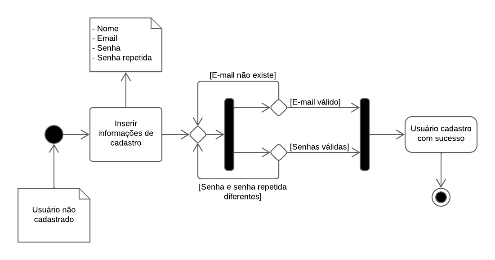

Visão Lógica
Introdução
Dentre as representações arquiteturais que compõem o DAS, a visão de lógica é responsável por evidenciar a estrutura básica e a organização do design do sistema. Segundo a Universidade Federal de Pernambuco, essa representação "ilustra as principais realizações de caso de uso, subsistemas, pacotes e classes que abrangem o comportamento significativo em termos de arquitetura." (UFPE, 2024)¹. Para esse fim, serão abordados os diagramas de classes, de pacotes e de atividades.
Metodologia
Primeiramente, foi decidido que os integrantes Carlos Eduardo, Israel Thalles e Luiz Guilherme formariam um subgrupo responável pelo desenvolvimento dessa visão. Por meio de mensagens assíncronas, o grupo de participantes foi organizado de modo que o documento fosse dividido, permitindo que cada membro contribuísse com uma parte específica. À excessão do Luiz Guilherme, que não pôde participar a tempo do desenvolvimento, todos participaram ativamente na realização das atividades.
Para o desenvolvimento dessa visão arquitetural, foram utilizados o diagrama de pacotes, para uma visão mais geral da estrutura do projeto, o diagrama de classes, para uma visão mais específica, e o diagrama de atividades, para demonstrar a lógica da interação do usuário com a aplicação.
Visão geral
O projeto está estruturado de acordo com uma adaptação do padrão arquitetural MVC com uma camada de persistência. Para que se visualize a organização da arquitetura, o diagrama de pacotes a seguir apresenta, de forma geral, a estrutura básica do projeto:

Figura 1: Diagrama de Pacotes Geral. (Fonte: João Vítor, 2024)
A partir da figura 1, é possível notar que o pacote Front-end desempenha o papel da camada de visão. Sua principal responsabilidade é prover uma interface para que o usuário possa interagir com o sistema. Essa camada recebe instruções do usuário, se comunica com o Back-end e apresenta os dados na interface gráfica.
A camada controladora, implementada no pacote de Back-end, age como uma intermediadora entre a camada de visão e a camada de modelo. É nessa camada que está contida toda a lógica da aplicação. Sua principal responsabilidade é receber e tratar as requisições dos usuários, eventualmente acessando dados da camada de persistência, e devolver uma resposta para a camada de visão.
Por fim, a camada do banco de dados representa a camada de modelo e é responsável por definir a estrutura dos dados e armazená-los.
Pacotes de design arquitetonicamente significativos
Diagrama de pacotes

Figura 2: Diagrama de Pacotes do Frontend com Backend. (Fonte: João Vítor, 2024)
O diagrama de pacotes, apresentado na figura 2, demonstra os principais pacotes contidos na aplicação e a relação que possuem entre si, em nosso projeto, o diagrama de pacotes evidencia os mesmos tanto na parte do Frontend quanto do Backend.
Pacote da camada Frontend
Aqui estão os subpacotes pertencentes ao Frontend e a relação entre eles, bem como a interação com o pacote do Backend, que serão explicados mais à frente.
Subpacote Src
É onde se encontra o código para as telas que serão vistas pelo usuário, nele estão contidos os Components, os Scripts e os Styles, que juntos dão a forma como as páginas serão visualizadas(Style), onde se encontram as funções que ela possuirá(Components) e onde irá procurar o código para executar a ação solicitada(Scripts), e para que isso ocorra sem erros, o subpacote Src importa as Libraries e a Api e acessa os assets, as Libraries são onde os termos utilizados para criar o código se encontram e serão puxados de lá para que o mesmo entenda o que fazer, a Api é de onde puxa todas as funcionalidades implementadas no Backend e os assets são onde todas as fontes de imagem se encontram.
Subpacote Public
É onde o que será visto pelo usuário será programado, possuindo os subpacotes Pages, que é a implementação das páginas que o aplicativo irá possuir, e Styles, que é onde estas páginas serão estilizadas, ele importa o subpacote Src e Api para que possa funcionar corretamente.
Pacote da camada Backend
Aqui estão os subpacotes pertencentes ao backend e a relação entre eles, e o mesmo é importado pelo pacote Frontend por meio do subpacote chamado Api.
Subpacote Routes
Ele é onde as rotas para que a aplicação rode se encontram, sem ele, elas estariam implementadas, mas perdidas, e assim a aplicação não funcionaria, ele importa os subpacotes utils e Services.
Subpacote utils
É nele que se encontra as funções que serão reutilizadas no projeto, ele também importa o subpacote Services.
Subpacote Services
Services é o subpacote onde o bruto das funcionalidades estão implementados, utils as tornam reutilizáveis, enquanto o Services implementa como elas funcionam, ele importa o subpacote Model.
Subpacote Model
Model são os modelos base utilizados para a programação geral da aplicação, sem ele, não existiria a referência para a criação dos códigos em Services.
Subpacote Config
Presente tanto nos pacotes de Frontend quanto Backend, embora sejam diferentes entre si, funcionam da mesma forma, garantindo que ambos os pacotes estejam implementados de acordo com o definido.
Diagrama de classes

Figura 3: Diagrama de classes do aplicativo My Music (Fonte: Ana Luíza Rodrigues e Rafael Xavier, 2024)
O diagrama de classes, apresentado na figura 3, elucida como será o relacionamento das principais entidades da apicação.
Classe Perfil
A principal função dessa classe é definir os atibutos e o método de login que serão comuns aos dois tipos de usuário, artista e usuário comum, que a aplicação pode ter.
Classe Usuário
Essa é a principal classe da aplicação. Uma de suas principais renponsabilidades é reproduzir músicas ou playlists, isso engloba todos os métodos normalmente associados com reprodução de músicas, como pausar, avançar e voltar. É esse usuário o rensponsável por criar uma playlist e adicionar ou remover músicas à ela.
Classe Artista
A classe artista define as informações e as operações que um usuário do tipo artista pode realizar. É esse usuário o rensponsável por criar um álbum, adicionar ou remover músicas e por publicá-lo. Ele pode colaborar com uma ou mais músicas e pode ou não possuir um álbum associado a ele.
Classe Música
Essa classe define a estrutura de uma música. Como principais atributos, uma música possui um nome, está associada a um artista e faz parte de um álbum. Além disso, possui dois métodos que permitem aos usuários interagir com uma música pretendida, sendo eles o método reproduzir e o método pausar.
Classe Álbum
Um álbum, basicamente, é composto por uma ou mais músicas e está associado a um ou mais artistas. Ademais, possui métodos de manipulação de músicas.
Classe Playlist
É similar, em alguns aspectos, à classe Álbum, como uma lista de músicas associadas e os métodos de adição e remoção de músicas. Entretanto, playlist não necessariamente possui apenas músicas do mesmo álbum ou artista.
Diagrama de atividades
O diagrama de atividades serve para que se possa entender como as atividades que serão realizadas pelo usuário irão interagir com a aplicação, mostrando os caminhos possíveis para a ação.

Figura 4: Diagrama de cadastro. (Fonte: Vinícius Mendes, 2024)
O diagrama de cadastro demonstra como o mesmo é efetuado, o usuário que deseja se cadastrar precisa fornecer nome, email, senha e repetir a senha, e a aplicação irá registrar o usuário se todas as etapas tiverem sido executadas sem erros, ou retornar o que está errado.
Figura 5: Diagrama de login. (Fonte: Vinícius Mendes, 2024)
Para efetuar o login, a aplicação pede o nome de usuário ou o email e a senha, e confere na base de dados se eles correspondem a algum existente, efetuando o mesmo se tudo estiver correto ou retornando erro caso contrário.

Figura 6: Diagrama de ouvir música. (Fonte: Vinícius Mendes, 2024)
Para encontrar e reproduzir uma música, a aplicação irá possibilitar, além de pesquisar por nome, filtrar por artista, álbum, playlist e estilo musical, caso encontre, irá reproduzir a música, caso contrário, retorna que não encontrou a música pesquisada.

Figura 7: Diagrama de criar playlist. (Fonte: Vinícius Mendes, 2024)
Ao selecionar para criar uma playlist, o aplicativo irá criar a mesma, pedirá para que as configurações sejam implementadas e depois seguirá para a adição de músicas, onde o usuário poderá adicionar em sequência ou aos poucos, em sequência acontecerá o loop de seleção e adição, e ao concluir ou decidir por adicionar aos poucos, a playlist irá ser salva.
Bibliografia
Conceito: Visão Lógica. Disponível em: https://www.cin.ufpe.br/~gta/rup-vc/core.base_rup/guidances/concepts/logical_view_C135365E.html. Acesso em: 4 ago. 2024.
Documento de Arquitetura de Software. Disponível em: https://unbarqdsw2023-1.github.io/2023.1_G5_ProjetoRiHappy/#/4.arquiteturareutilizacao/padroes/padroesarquiteturais. Acesso em: 4 ago. 2024.
Referências Bibliográficas
¹ Conceito: Visão Lógica. Disponível em: https://www.cin.ufpe.br/~gta/rup-vc/core.base_rup/guidances/concepts/logical_view_C135365E.html. Acesso em: 4 ago. 2024.
Histórico de versão
| Versão | Data | Descrição | Autores | Revisor |
|---|---|---|---|---|
| 1.0 | 03/08/2024 | Criação do Documento | Israel Thalles | Vinícius Mendes (Link da revisão) |
| 1.1 | 04/08/2024 | Adição de introdução e referências | Israel Thalles | Vinícius Mendes (Link da revisão) |
| 1.2 | 05/08/2024 | Alteração no template | Israel Thalles | Vinícius Mendes (Link da revisão) |
| 1.3 | 06/08/2024 | Adição da visão geral | Israel Thalles | Vinícius Mendes (Link da revisão) |
| 1.4 | 09/08/2024 | Adição da explicação do diagrama de classes | Israel Thalles | |
| 1.5 | 10/08/2024 | Adição da explicação dos diagramas de pacotes e de atividades | Carlos Eduardo Mendes de Mesquita | Vinícius Mendes (Link da revisão) |
| 1.6 | 12/08/2024 | Adição da metodologia | Israel Thalles | Vinícius Mendes (Link da revisão) |
| 1.7 | 12/08/2024 | Adição de uma seção para a introdução | Israel Thalles | Vinícius Mendes (Link da revisão) |